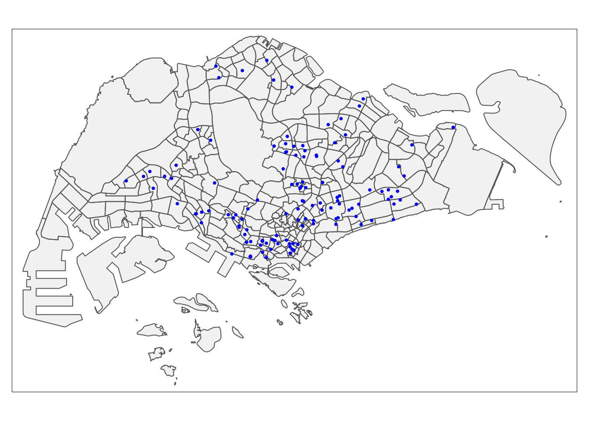
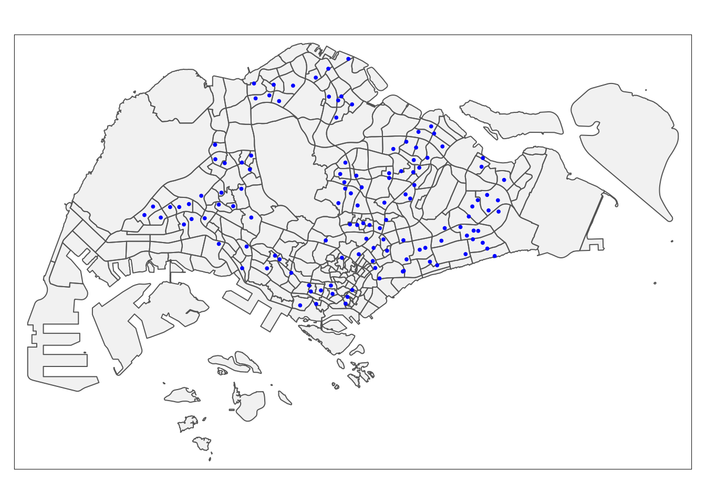
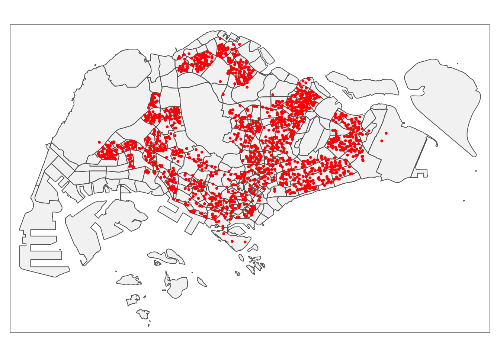
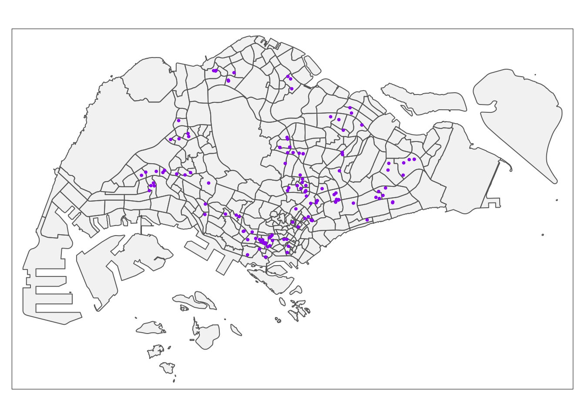
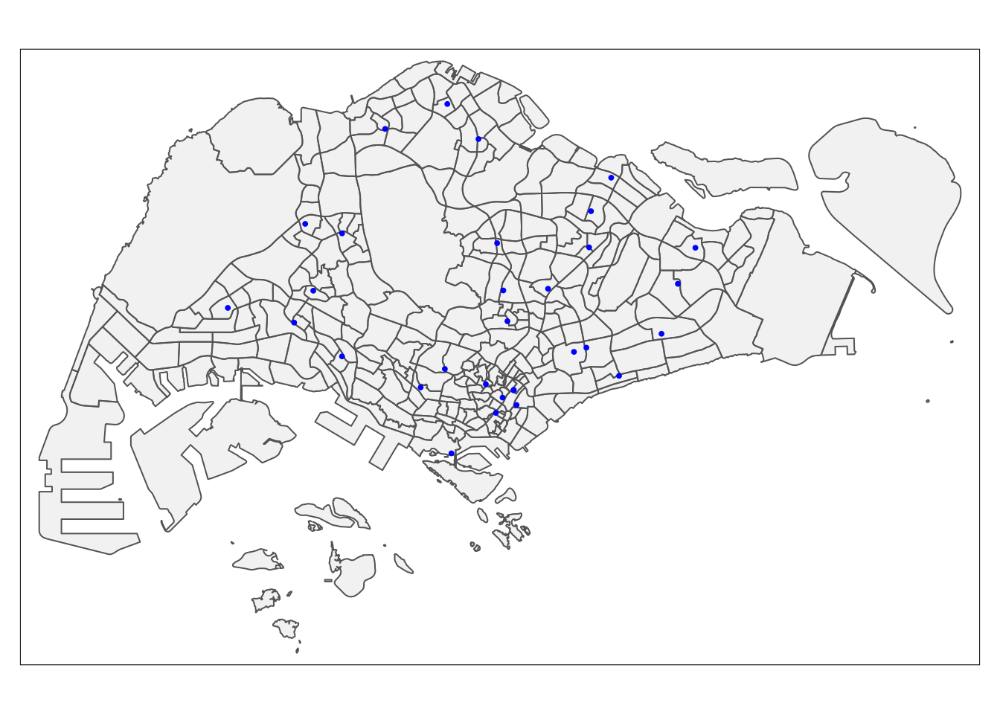
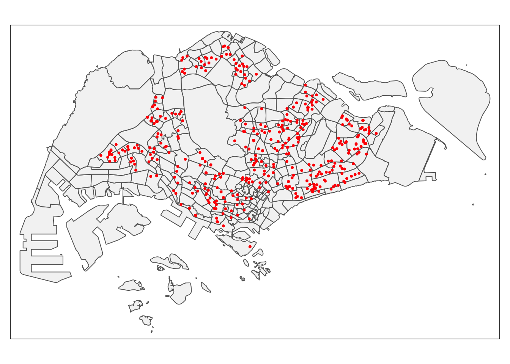
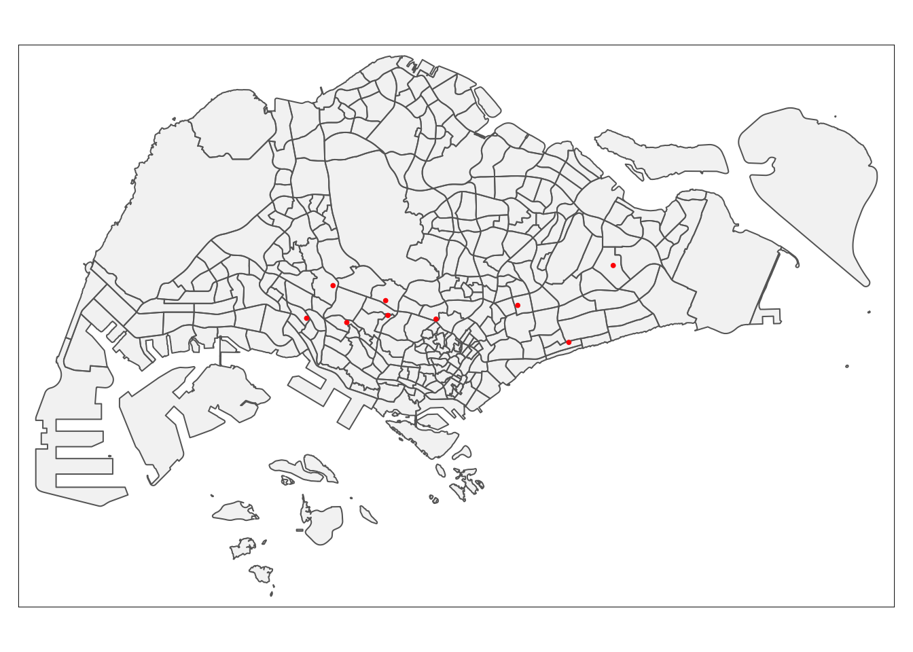
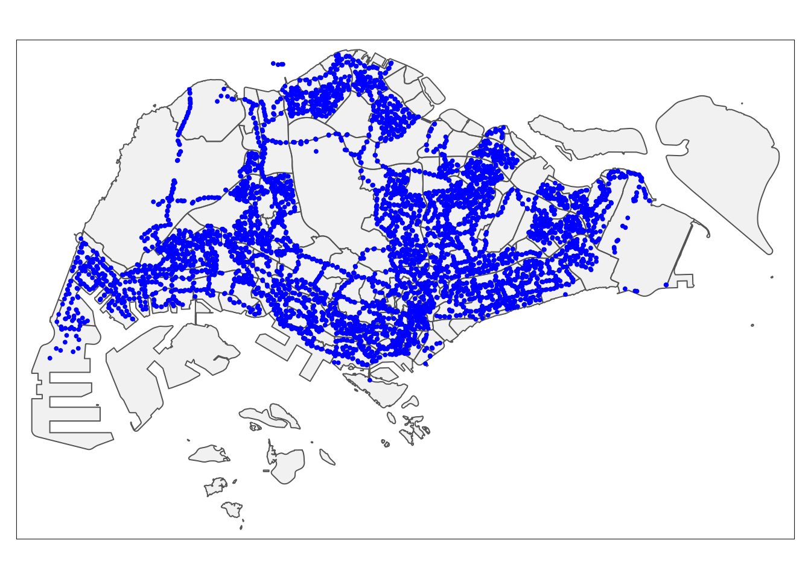
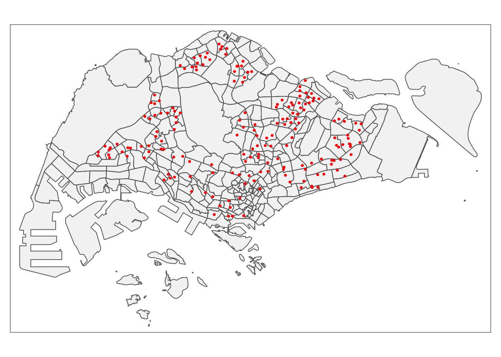
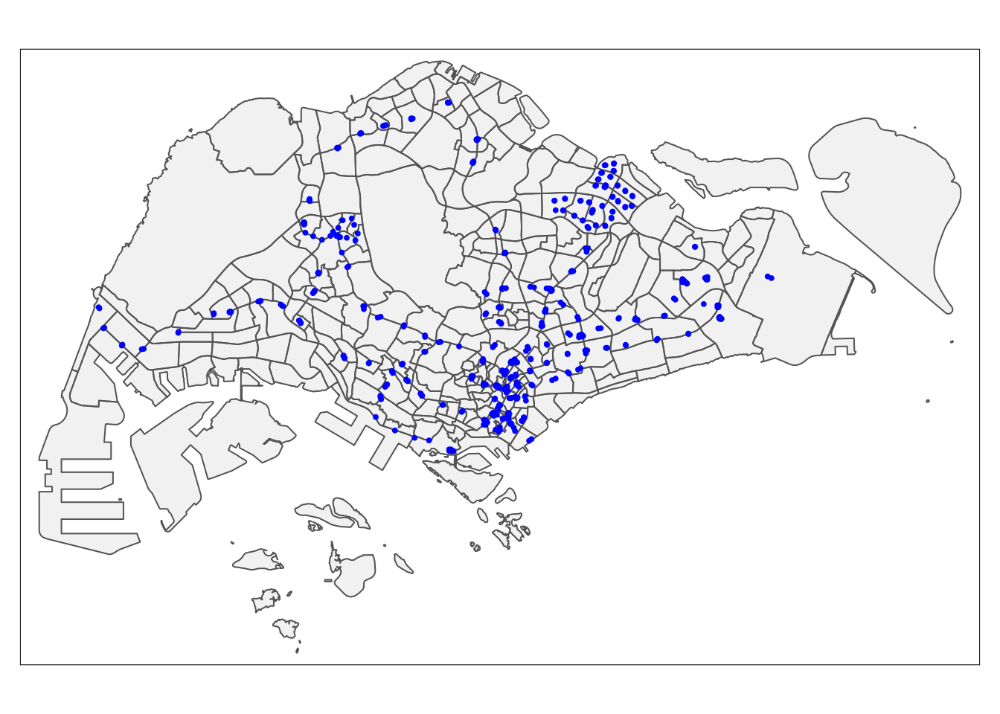

pacman::p_load('sf', 'tidyverse', 'tmap', 'spdep', 'onemapsgapi', 'units', 'matrixStats', 'readxl', 'jsonlite', 'olsrr', 'corrplot', 'ggpubr', 'GWmodel',
'devtools', 'kableExtra', 'plotly', 'ggthemes')Take-home Exercise 3: Predicting HDB Public Housing Resale Pricies using Geographically Weighted Methods
1 Setting the scene
Several things influence housing costs. Some of them have a worldwide scope, such the overall health of a nation’s economy or the level of inflation. Some may focus more on the properties themselves. You can further divide these characteristics into structural and geographic ones.
Geographical Weighted Models were introduced for enhancing predictive model for housing resale prices as traditional price predictive models failed to take account the spatial correlation and heterogeneity in geographical aspects which caused inaccuracy and biasness.
1.1 Loading the data
1.2 Data set used
# initialise a dataframe of our aspatial and geospatial dataset details
datasets <- data.frame(
Type=c("Aspatial",
"Geospatial",
"Geospatial",
"Geospatial",
"Geospatial",
"Geospatial - Extracted",
"Geospatial - Extracted",
"Geospatial - Extracted",
"Geospatial - Extracted",
"Geospatial - Extracted",
"Geospatial - Extracted",
"Geospatial - Extracted",
"Geospatial - Selfsourced",
"Geospatial - Selfsourced",
"Geospatial - Selfsourced",
"Geospatial - Selfsourced"),
Name=c("Resale Flat Prices",
"Singapore National Boundary",
"Master Plan 2014 Subzone Boundary (Web)",
"MRT & LRT Locations Aug 2021",
"Bus Stop Locations Aug 2021",
"Childcare Services",
"Eldercare Services",
"Hawker Centres",
"Kindergartens",
"Parks",
"Supermarkets",
"Primary Schools",
"Community Health Assistance Scheme (CHAS) Clinics",
"Integrated Screening Programme (ISP) Clinics",
"Public, Private and Non-for-profit Hospitals",
"Shopping Mall SVY21 Coordinates`"),
Format=c(".csv",
".shp",
".shp",
".shp",
".shp",
".shp",
".shp",
".shp",
".shp",
".shp",
".shp",
".shp",
".kml",
".shp",
".xlsx",
".csv"),
Source=c("[data.gov.sg](https://data.gov.sg/dataset/resale-flat-prices)",
"[data.gov.sg](https://data.gov.sg/dataset/national-map-polygon)",
"[data.gov.sg](https://data.gov.sg/dataset/master-plan-2014-subzone-boundary-web)",
"[LTA Data Mall](https://datamall.lta.gov.sg/content/datamall/en/search_datasets.html?searchText=Train)",
"[LTA Data Mall](https://datamall.lta.gov.sg/content/datamall/en/search_datasets.html?searchText=bus%20stop)",
"[OneMap API](https://www.onemap.gov.sg/docs/)",
"[OneMap API](https://www.onemap.gov.sg/docs/)",
"[OneMap API](https://www.onemap.gov.sg/docs/)",
"[OneMap API](https://www.onemap.gov.sg/docs/)",
"[OneMap API](https://www.onemap.gov.sg/docs/)",
"[OneMap API](https://www.onemap.gov.sg/docs/)",
"[OneMap API](https://www.onemap.gov.sg/docs/)",
"[data.gov.sg](https://data.gov.sg/dataset/chas-clinics)",
"[OneMap API](https://www.onemap.gov.sg/docs/)",
"Self-sourced and collated (section 2.3)",
"[Mall SVY21 Coordinates Web Scaper](https://github.com/ValaryLim/Mall-Coordinates-Web-Scraper)")
)
# with reference to this guide on kableExtra:
# https://cran.r-project.org/web/packages/kableExtra/vignettes/awesome_table_in_html.html
# kable_material is the name of the kable theme
# 'hover' for to highlight row when hovering, 'scale_down' to adjust table to fit page width
library(knitr)
library(kableExtra)
kable(datasets, caption="Datasets Used") %>%
kable_material("hover", latex_options="scale_down")| Type | Name | Format | Source |
|---|---|---|---|
| Aspatial | Resale Flat Prices | .csv | [data.gov.sg](https://data.gov.sg/dataset/resale-flat-prices) |
| Geospatial | Singapore National Boundary | .shp | [data.gov.sg](https://data.gov.sg/dataset/national-map-polygon) |
| Geospatial | Master Plan 2014 Subzone Boundary (Web) | .shp | [data.gov.sg](https://data.gov.sg/dataset/master-plan-2014-subzone-boundary-web) |
| Geospatial | MRT & LRT Locations Aug 2021 | .shp | [LTA Data Mall](https://datamall.lta.gov.sg/content/datamall/en/search_datasets.html?searchText=Train) |
| Geospatial | Bus Stop Locations Aug 2021 | .shp | [LTA Data Mall](https://datamall.lta.gov.sg/content/datamall/en/search_datasets.html?searchText=bus%20stop) |
| Geospatial - Extracted | Childcare Services | .shp | [OneMap API](https://www.onemap.gov.sg/docs/) |
| Geospatial - Extracted | Eldercare Services | .shp | [OneMap API](https://www.onemap.gov.sg/docs/) |
| Geospatial - Extracted | Hawker Centres | .shp | [OneMap API](https://www.onemap.gov.sg/docs/) |
| Geospatial - Extracted | Kindergartens | .shp | [OneMap API](https://www.onemap.gov.sg/docs/) |
| Geospatial - Extracted | Parks | .shp | [OneMap API](https://www.onemap.gov.sg/docs/) |
| Geospatial - Extracted | Supermarkets | .shp | [OneMap API](https://www.onemap.gov.sg/docs/) |
| Geospatial - Extracted | Primary Schools | .shp | [OneMap API](https://www.onemap.gov.sg/docs/) |
| Geospatial - Selfsourced | Community Health Assistance Scheme (CHAS) Clinics | .kml | [data.gov.sg](https://data.gov.sg/dataset/chas-clinics) |
| Geospatial - Selfsourced | Integrated Screening Programme (ISP) Clinics | .shp | [OneMap API](https://www.onemap.gov.sg/docs/) |
| Geospatial - Selfsourced | Public, Private and Non-for-profit Hospitals | .xlsx | Self-sourced and collated (section 2.3) |
| Geospatial - Selfsourced | Shopping Mall SVY21 Coordinates` | .csv | [Mall SVY21 Coordinates Web Scaper](https://github.com/ValaryLim/Mall-Coordinates-Web-Scraper) |
2 Data Preparation
2.1 Aspatial data
Loading Resale Data
resale <- read_csv("data/aspatial/resale-flat-prices-based-on-registration-date-from-jan-2017-onwards.csv")glimpse(resale)Rows: 148,680
Columns: 11
$ month <chr> "2017-01", "2017-01", "2017-01", "2017-01", "2017-…
$ town <chr> "ANG MO KIO", "ANG MO KIO", "ANG MO KIO", "ANG MO …
$ flat_type <chr> "2 ROOM", "3 ROOM", "3 ROOM", "3 ROOM", "3 ROOM", …
$ block <chr> "406", "108", "602", "465", "601", "150", "447", "…
$ street_name <chr> "ANG MO KIO AVE 10", "ANG MO KIO AVE 4", "ANG MO K…
$ storey_range <chr> "10 TO 12", "01 TO 03", "01 TO 03", "04 TO 06", "0…
$ floor_area_sqm <dbl> 44, 67, 67, 68, 67, 68, 68, 67, 68, 67, 68, 67, 67…
$ flat_model <chr> "Improved", "New Generation", "New Generation", "N…
$ lease_commence_date <dbl> 1979, 1978, 1980, 1980, 1980, 1981, 1979, 1976, 19…
$ remaining_lease <chr> "61 years 04 months", "60 years 07 months", "62 ye…
$ resale_price <dbl> 232000, 250000, 262000, 265000, 265000, 275000, 28…We will be looking at 3 room flats, within January of 2021 to Febuary of 2023, which will be separated again later on. This is done by using filter() on flat_type and month.
resale_sub <- resale %>%
filter(flat_type == "3 ROOM",
month >= "2021-01" & month <= "2023-02")To double confirm that we extracted what we really want, we will be using unique() to view what we extracted. As seen below, we have extracted the correct range for the dates, and the flat_type of 3 Room.
unique(resale_sub$month) [1] "2021-01" "2021-02" "2021-03" "2021-04" "2021-05" "2021-06" "2021-07"
[8] "2021-08" "2021-09" "2021-10" "2021-11" "2021-12" "2022-01" "2022-02"
[15] "2022-03" "2022-04" "2022-05" "2022-06" "2022-07" "2022-08" "2022-09"
[22] "2022-10" "2022-11" "2022-12" "2023-01" "2023-02"unique(resale_sub$flat_type)[1] "3 ROOM"glimpse(resale_sub)Rows: 13,780
Columns: 11
$ month <chr> "2021-01", "2021-01", "2021-01", "2021-01", "2021-…
$ town <chr> "ANG MO KIO", "ANG MO KIO", "ANG MO KIO", "ANG MO …
$ flat_type <chr> "3 ROOM", "3 ROOM", "3 ROOM", "3 ROOM", "3 ROOM", …
$ block <chr> "331", "534", "561", "170", "463", "542", "170", "…
$ street_name <chr> "ANG MO KIO AVE 1", "ANG MO KIO AVE 10", "ANG MO K…
$ storey_range <chr> "04 TO 06", "04 TO 06", "01 TO 03", "07 TO 09", "0…
$ floor_area_sqm <dbl> 68, 68, 68, 60, 68, 68, 60, 73, 67, 67, 68, 68, 73…
$ flat_model <chr> "New Generation", "New Generation", "New Generatio…
$ lease_commence_date <dbl> 1981, 1980, 1980, 1986, 1980, 1981, 1986, 1976, 19…
$ remaining_lease <chr> "59 years", "58 years 02 months", "58 years 01 mon…
$ resale_price <dbl> 260000, 265000, 265000, 268000, 268000, 270000, 27…2.1.2 Aspatial Wrangling
As we can see from the resale_sub, the variable remaining lease and lease commence date essentially provides the same information. We will only be including remaining lease, as it directly tells us the remaining year.
resale_sub <- resale_sub %>%
select(- lease_commence_date)Additionally, after looking at the resale_sub variables, we notice that remaining lease is <chr>. We would want it to be numeric, as it will be beneficial for us later on. We will have to first split the months and years in the variable remaining_lease.
resale_sub <- resale_sub %>%
mutate(remaining_lease_yr = as.integer(str_sub(remaining_lease, 0, 2))) %>%
mutate(remaining_lease_mth = as.integer(str_sub(remaining_lease, 9, 11)))glimpse(resale_sub)Rows: 13,780
Columns: 12
$ month <chr> "2021-01", "2021-01", "2021-01", "2021-01", "2021-…
$ town <chr> "ANG MO KIO", "ANG MO KIO", "ANG MO KIO", "ANG MO …
$ flat_type <chr> "3 ROOM", "3 ROOM", "3 ROOM", "3 ROOM", "3 ROOM", …
$ block <chr> "331", "534", "561", "170", "463", "542", "170", "…
$ street_name <chr> "ANG MO KIO AVE 1", "ANG MO KIO AVE 10", "ANG MO K…
$ storey_range <chr> "04 TO 06", "04 TO 06", "01 TO 03", "07 TO 09", "0…
$ floor_area_sqm <dbl> 68, 68, 68, 60, 68, 68, 60, 73, 67, 67, 68, 68, 73…
$ flat_model <chr> "New Generation", "New Generation", "New Generatio…
$ remaining_lease <chr> "59 years", "58 years 02 months", "58 years 01 mon…
$ resale_price <dbl> 260000, 265000, 265000, 268000, 268000, 270000, 27…
$ remaining_lease_yr <int> 59, 58, 58, 64, 58, 59, 64, 54, 56, 55, 59, 58, 55…
$ remaining_lease_mth <int> NA, 2, 1, 2, 2, 1, NA, 4, 10, 4, 1, 8, 7, 9, 4, 5,…From above, we notice that there are NA values for remaining lease month. We will replace it with 0 by identifying it with is.na()
resale_sub$remaining_lease_mth[is.na(resale_sub$remaining_lease_mth)] <- 0Our main goal here is to convert remaining lease months into years, and add them together under remaining_lease_year. we will first divide the remaining lease month variable by 12.
resale_sub$remaining_lease_mth <- resale_sub$remaining_lease_mth/12Then, we will combine them together under the new variable remaining lease year.
resale_sub <- resale_sub %>%
mutate(resale_sub, remaining_lease_year = rowSums(resale_sub[, c("remaining_lease_yr", "remaining_lease_mth")]))Finally, we will select the rows we want using select(). Let us use glimpse to view the variables.
resale_sub <- resale_sub %>%
select(month, town, flat_type, block, street_name, storey_range, floor_area_sqm, remaining_lease_year)glimpse(resale_sub)Rows: 13,780
Columns: 8
$ month <chr> "2021-01", "2021-01", "2021-01", "2021-01", "2021…
$ town <chr> "ANG MO KIO", "ANG MO KIO", "ANG MO KIO", "ANG MO…
$ flat_type <chr> "3 ROOM", "3 ROOM", "3 ROOM", "3 ROOM", "3 ROOM",…
$ block <chr> "331", "534", "561", "170", "463", "542", "170", …
$ street_name <chr> "ANG MO KIO AVE 1", "ANG MO KIO AVE 10", "ANG MO …
$ storey_range <chr> "04 TO 06", "04 TO 06", "01 TO 03", "07 TO 09", "…
$ floor_area_sqm <dbl> 68, 68, 68, 60, 68, 68, 60, 73, 67, 67, 68, 68, 7…
$ remaining_lease_year <dbl> 59.00000, 58.16667, 58.08333, 64.16667, 58.16667,…By referencing to our favorite senior, Megan, she advised that we replace “SAINT” with “ST”, as onemap spells it that way in the variable street_name, which will be a bit confusing. We can change that by using the code chunk below
resale_sub$street_name <- gsub("ST\\.", "SAINT", resale_sub$street_name)Similarly, by referencing Megan’s work, we notice that there are no coordinates provided in the resale data. we will have to use a geocoding function as shown below.
The steps are as follows:
Combine the block and street name into an address
Pass the address as the searchVal in our query
Send the query to OneMapSG search Note: Since we don’t need all the address details, we can set
getAddrDetailsas ‘N’Convert response (JSON object) to text
Saving the response in text form as a data frame
retaining the latitude and longitude for our output
library(httr)
library(rjson)
geocode <- function(block, streetname) {
base_url <- "https://developers.onemap.sg/commonapi/search"
address <- paste(block, streetname, sep = " ")
query <- list("searchVal" = address,
"returnGeom" = "Y",
"getAddrDetails" = "N",
"pageNum" = "1")
res <- GET(base_url, query = query)
restext<-content(res, as="text")
output <- fromJSON(restext) %>%
as.data.frame %>%
select(results.LATITUDE, results.LONGITUDE)
return(output)
}After creating the function, we will have to make sure that the iterations are able to run through the whole resale data to ensure that every entry gets a coordinate. As such, we will be creating a loop
resale_sub$LATITUDE <- 0
resale_sub$LONGITUDE <- 0
for (i in 1:nrow(resale_sub)){
temp_output <- geocode(resale_sub[i, 4], resale_sub[i, 5])
resale_sub$LATITUDE[i] <- temp_output$results.LATITUDE
resale_sub$LONGITUDE[i] <- temp_output$results.LONGITUDE
}Let us save it into a RDS object
saveRDS(resale_sub, file="resale_sub", compress=FALSE)We will then assign the RDS object to resale_sub
resale_sub <-readRDS("resale_sub")
resale_sub# A tibble: 13,780 × 8
month town flat_type block street_name storey…¹ floor…² remai…³
<chr> <chr> <chr> <chr> <chr> <chr> <dbl> <dbl>
1 2021-01 ANG MO KIO 3 ROOM 331 ANG MO KIO AVE 1 04 TO 06 68 59
2 2021-01 ANG MO KIO 3 ROOM 534 ANG MO KIO AVE 10 04 TO 06 68 58.2
3 2021-01 ANG MO KIO 3 ROOM 561 ANG MO KIO AVE 10 01 TO 03 68 58.1
4 2021-01 ANG MO KIO 3 ROOM 170 ANG MO KIO AVE 4 07 TO 09 60 64.2
5 2021-01 ANG MO KIO 3 ROOM 463 ANG MO KIO AVE 10 04 TO 06 68 58.2
6 2021-01 ANG MO KIO 3 ROOM 542 ANG MO KIO AVE 10 04 TO 06 68 59.1
7 2021-01 ANG MO KIO 3 ROOM 170 ANG MO KIO AVE 4 07 TO 09 60 64
8 2021-01 ANG MO KIO 3 ROOM 216 ANG MO KIO AVE 1 04 TO 06 73 54.3
9 2021-01 ANG MO KIO 3 ROOM 121 ANG MO KIO AVE 3 04 TO 06 67 56.8
10 2021-01 ANG MO KIO 3 ROOM 212 ANG MO KIO AVE 3 04 TO 06 67 55.3
# … with 13,770 more rows, and abbreviated variable names ¹storey_range,
# ²floor_area_sqm, ³remaining_lease_year2.2 Geospatial data
As mentioned above, we will be extracting geospatial data from Onemap. the codes used below will require the onemapsgapi package, which is already loaded in 1.1. I will break down the steps to extract data from Onemap as simple as possible!
First, create an account for Onemap
Fill up your details in this link (with the details sent to your email)
Ready to go after following the code chunks below!
Do note that this is purely for reference, you will have to type in your own email and password to load your token!
Type this command into the console, with your own email and password
run_token <- get_token("email", "password")Next, since I love food, I will be giving an example to extract hawker data from Onemap, using this code chunk.
themes <- search_themes(run_token, "hawkercentre")We will use the following function to extract data from Onemap. Lets assign it into hawker.
hawkercentre <- get_theme(run_token, "hawkercentre")And of course, our favorite part, ensuring that our spatial data have the correct ESPG CRS, which is 3414. We will also need to transform it into sf using st_as_sf(). Since we will be dealing with various extracted data, we do not want to keep extracting it each time we run or render the page. Hence, we will be using st_write() to write the sf object to file or database!
hawkercentre_sf <- st_as_sf(hawkercentre, coords = c("Lng", "Lat"), crs = 4326) %>%
st_transform(crs = 3414)
st_write(obj = hawkercentre_sf,
dsn = "data/geospatial/extracted",
layer = "hawkercentre",
driver = "ESRI Shapefile")We can just repeat the steps above for the following variables. For the scope of this assignment, we will be extracting the following:
childcare
community clubs
elder care
kindergartens
libraries
parks
I have already extracted the data beforehand, so let us proceed!
(Note that we have already extracted hawker centers!)
For reference, i will be putting the code below to extract the data from onemap
childcare <- get_theme(token,"childcare")
childcare_sf <- st_as_sf(childcare, coords = c("Lng", "Lat"), crs = 4326) %>%
st_transform(crs = 3414)
st_write(obj = childcare_sf,
dsn = "data/geospatial/extracted",
layer = "childcare",
driver = "ESRI Shapefile")communityclubs<- get_theme(token,"communityclubs")
communityclubs_sf <- st_as_sf(childcare, coords = c("Lng", "Lat"), crs = 4326) %>%
st_transform(crs = 3414)
st_write(obj = communityclubs_sf,
dsn = "data/geospatial/extracted",
layer = "communityclubs",
driver = "ESRI Shapefile")eldercare <- get_theme(token,"eldercare")
eldercare_sf <- st_as_sf(eldercare, coords=c("Lng", "Lat"), crs = 4326) %>%
st_transform(crs = 3414)
st_write(obj = eldercare_sf,
dsn = "data/geospatial/extracted",
layer = "eldercare",
driver = "ESRI Shapefile")kindergartens <- get_theme(token,"kindergartens")
kindergartens_sf <- st_as_sf(kindergartens, coords=c("Lng", "Lat"), crs= 4326) %>%
st_transform(crs = 3414)
st_write(obj = kindergartens_sf,
dsn = "data/geospatial/extracted",
layer = "kindergartens",
driver = "ESRI Shapefile")library <- get_theme(token,"libraries")
library_sf <- st_as_sf(library, coords=c("Lng", "Lat"), crs = 4326) %>%
st_transform(crs = 3414)
st_write(obj = library_sf,
dsn = "data/geospatial/extracted",
layer = "libraries",
driver = "ESRI Shapefile")parks <- get_theme(token,"nationalparks")
parks_sf <- st_as_sf(parks, coords=c("Lng", "Lat"), crs = 4326) %>%
st_transform(crs = 3414)
st_write(obj = parks_sf,
dsn = "data/geospatial/extracted",
layer = "parks",
driver = "ESRI Shapefile")2.2.1 Reading Geospatial Data
hawkercentre_sf <- st_read(dsn = "data/geospatial/extracted", layer = "hawkercentre")Reading layer `hawkercentre' from data source
`/Users/keredpoh/Desktop/keredpoh/IS415-GAA/Take-home_Ex/Take-home_Ex03/data/geospatial/extracted'
using driver `ESRI Shapefile'
Simple feature collection with 125 features and 18 fields
Geometry type: POINT
Dimension: XY
Bounding box: xmin: 12874.19 ymin: 28355.97 xmax: 45241.4 ymax: 47850.43
Projected CRS: SVY21 / Singapore TMeldercare_sf <- st_read(dsn = "data/geospatial/extracted", layer = "eldercare")Reading layer `eldercare' from data source
`/Users/keredpoh/Desktop/keredpoh/IS415-GAA/Take-home_Ex/Take-home_Ex03/data/geospatial/extracted'
using driver `ESRI Shapefile'
Simple feature collection with 133 features and 4 fields
Geometry type: POINT
Dimension: XY
Bounding box: xmin: 14481.92 ymin: 28218.43 xmax: 41665.14 ymax: 46804.9
Projected CRS: SVY21 / Singapore TMchildcare_sf <- st_read(dsn = "data/geospatial/extracted", layer = "childcare")Reading layer `childcare' from data source
`/Users/keredpoh/Desktop/keredpoh/IS415-GAA/Take-home_Ex/Take-home_Ex03/data/geospatial/extracted'
using driver `ESRI Shapefile'
Simple feature collection with 1925 features and 5 fields
Geometry type: POINT
Dimension: XY
Bounding box: xmin: 11810.03 ymin: 25596.33 xmax: 45404.24 ymax: 49300.88
Projected CRS: SVY21 / Singapore TMcommunityclubs_sf <- st_read(dsn = "data/geospatial/extracted", layer = "communityclubs")Reading layer `communityclubs' from data source
`/Users/keredpoh/Desktop/keredpoh/IS415-GAA/Take-home_Ex/Take-home_Ex03/data/geospatial/extracted'
using driver `ESRI Shapefile'
Simple feature collection with 125 features and 11 fields
Geometry type: POINT
Dimension: XY
Bounding box: xmin: 12308.4 ymin: 28593.37 xmax: 42008.87 ymax: 48958.52
Projected CRS: SVY21 / Singapore TMkindergartens_sf <- st_read(dsn = "data/geospatial/extracted", layer = "kindergartens")Reading layer `kindergartens' from data source
`/Users/keredpoh/Desktop/keredpoh/IS415-GAA/Take-home_Ex/Take-home_Ex03/data/geospatial/extracted'
using driver `ESRI Shapefile'
Simple feature collection with 448 features and 5 fields
Geometry type: POINT
Dimension: XY
Bounding box: xmin: 11909.7 ymin: 25596.33 xmax: 43395.47 ymax: 48562.06
Projected CRS: SVY21 / Singapore TMlibrary_sf <- st_read(dsn = "data/geospatial/extracted", layer = "libraries")Reading layer `libraries' from data source
`/Users/keredpoh/Desktop/keredpoh/IS415-GAA/Take-home_Ex/Take-home_Ex03/data/geospatial/extracted'
using driver `ESRI Shapefile'
Simple feature collection with 31 features and 13 fields
Geometry type: POINT
Dimension: XY
Bounding box: xmin: 13665.24 ymin: 27383.57 xmax: 40922.89 ymax: 47759.75
Projected CRS: SVY21 / Singapore TMparks_sf <- st_read(dsn = "data/geospatial/extracted", layer = "nationalparks")Reading layer `nationalparks' from data source
`/Users/keredpoh/Desktop/keredpoh/IS415-GAA/Take-home_Ex/Take-home_Ex03/data/geospatial/extracted'
using driver `ESRI Shapefile'
Simple feature collection with 421 features and 2 fields
Geometry type: POINT
Dimension: XY
Bounding box: xmin: 12374.75 ymin: 21917.81 xmax: 52533.09 ymax: 49296.46
Projected CRS: SVY21 / Singapore TMmpsz_sf <- st_read(dsn = "data/geospatial/map", layer = "MP14_SUBZONE_WEB_PL")Reading layer `MP14_SUBZONE_WEB_PL' from data source
`/Users/keredpoh/Desktop/keredpoh/IS415-GAA/Take-home_Ex/Take-home_Ex03/data/geospatial/map'
using driver `ESRI Shapefile'
Simple feature collection with 323 features and 15 fields
Geometry type: MULTIPOLYGON
Dimension: XY
Bounding box: xmin: 2667.538 ymin: 15748.72 xmax: 56396.44 ymax: 50256.33
Projected CRS: SVY21busstop_sf <- st_read(dsn = "data/geospatial/sourced", layer = "BusStop")Reading layer `BusStop' from data source
`/Users/keredpoh/Desktop/keredpoh/IS415-GAA/Take-home_Ex/Take-home_Ex03/data/geospatial/sourced'
using driver `ESRI Shapefile'
Simple feature collection with 5159 features and 3 fields
Geometry type: POINT
Dimension: XY
Bounding box: xmin: 3970.122 ymin: 26482.1 xmax: 48284.56 ymax: 52983.82
Projected CRS: SVY21goodprisch_sf <- st_read(dsn = "data/geospatial/sourced", layer = "goodprimarysch")Reading layer `goodprimarysch' from data source
`/Users/keredpoh/Desktop/keredpoh/IS415-GAA/Take-home_Ex/Take-home_Ex03/data/geospatial/sourced'
using driver `ESRI Shapefile'
Simple feature collection with 9 features and 2 fields
Geometry type: POINT
Dimension: XY
Bounding box: xmin: 103.7611 ymin: 1.305285 xmax: 103.937 ymax: 1.34968
Geodetic CRS: WGS 84mrt_sf <- st_read(dsn = "data/geospatial/sourced", layer = "mrt")Reading layer `mrt' from data source
`/Users/keredpoh/Desktop/keredpoh/IS415-GAA/Take-home_Ex/Take-home_Ex03/data/geospatial/sourced'
using driver `ESRI Shapefile'
Simple feature collection with 474 features and 2 fields
Geometry type: POINT
Dimension: XY
Bounding box: xmin: 103.6368 ymin: 1.264972 xmax: 103.9893 ymax: 1.449157
Geodetic CRS: WGS 84prisch_sf <- st_read(dsn = "data/geospatial/sourced", layer = "primarysch")Reading layer `primarysch' from data source
`/Users/keredpoh/Desktop/keredpoh/IS415-GAA/Take-home_Ex/Take-home_Ex03/data/geospatial/sourced'
using driver `ESRI Shapefile'
Simple feature collection with 183 features and 2 fields
Geometry type: POINT
Dimension: XY
Bounding box: xmin: 103.6878 ymin: 1.274958 xmax: 103.9628 ymax: 1.456608
Geodetic CRS: WGS 84shoppingmall_sf <- st_read(dsn = "data/geospatial/sourced", layer = "shoppingmall")Reading layer `shoppingmall' from data source
`/Users/keredpoh/Desktop/keredpoh/IS415-GAA/Take-home_Ex/Take-home_Ex03/data/geospatial/sourced'
using driver `ESRI Shapefile'
Simple feature collection with 184 features and 1 field
Geometry type: POINT
Dimension: XY
Bounding box: xmin: 103.6784 ymin: 1.263797 xmax: 103.9897 ymax: 1.448227
Geodetic CRS: WGS 84supermarket_sf <- st_read(dsn = "data/geospatial/sourced", layer = "SUPERMARKETS")Reading layer `SUPERMARKETS' from data source
`/Users/keredpoh/Desktop/keredpoh/IS415-GAA/Take-home_Ex/Take-home_Ex03/data/geospatial/sourced'
using driver `ESRI Shapefile'
Simple feature collection with 526 features and 8 fields
Geometry type: POINT
Dimension: XY
Bounding box: xmin: 4901.188 ymin: 25529.08 xmax: 46948.22 ymax: 49233.6
Projected CRS: SVY212.2.2 Converting Self-sourced data
As we all know, we have yet to change our out-sourced data to the correct crs, which is 3414. Let us change it below using st_transform()! Do note that we do not need to do this all the time, especially when the data is already in the correct CRS. But in this case, all of the data are not.
busstop_sf <- busstop_sf %>%
st_transform(3414)goodprisch_sf <- goodprisch_sf %>%
st_transform(3414)mrt_sf <- mrt_sf %>%
st_transform(3414)prisch_sf <- prisch_sf %>%
st_transform(3414)shoppingmall_sf <- shoppingmall_sf %>%
st_transform(3414)supermarket_sf <- supermarket_sf %>%
st_transform(3414)2.2.3 Checking for invalid geometries
We will be checking invalid geometries using the length(), which() and st_is_valid() functions.
length(which(st_is_valid(hawkercentre_sf) == FALSE))[1] 0length(which(st_is_valid(communityclubs_sf) == FALSE))[1] 0length(which(st_is_valid(eldercare_sf) == FALSE))[1] 0length(which(st_is_valid(childcare_sf) == FALSE))[1] 0length(which(st_is_valid(kindergartens_sf) == FALSE))[1] 0length(which(st_is_valid(library_sf) == FALSE))[1] 0length(which(st_is_valid(parks_sf) == FALSE))[1] 0length(which(st_is_valid(mpsz_sf) == FALSE))[1] 9length(which(st_is_valid(busstop_sf) == FALSE))[1] 0length(which(st_is_valid(goodprisch_sf) == FALSE))[1] 0length(which(st_is_valid(mrt_sf) == FALSE))[1] 0length(which(st_is_valid(prisch_sf) == FALSE))[1] 0length(which(st_is_valid(shoppingmall_sf) == FALSE))[1] 0length(which(st_is_valid(supermarket_sf) == FALSE))[1] 0Alright, that aside, we notice that the basemap have a few invalid geometries. This can be corrected using st_make_valid()
mpsz_sf <- st_make_valid(mpsz_sf)2.3.4 Selecting name column
As we only need the name and geometry column, we will use the select() function.
hawkercentre_sf <- hawkercentre_sf %>%
select(1)communityclubs_sf <- communityclubs_sf %>%
select(1)eldercare_sf <- eldercare_sf %>%
select(1)childcare_sf <- childcare_sf %>%
select(1)kindergartens_sf <- kindergartens_sf %>%
select(1)library_sf <- library_sf %>%
select(1)parks_sf <- parks_sf %>%
select(1)busstop_sf <- busstop_sf %>%
select(1)goodprisch_sf <- goodprisch_sf %>%
select(1)mrt_sf <- mrt_sf %>%
select(1)prisch_sf <- prisch_sf %>%
select(1)shoppingmall_sf <- shoppingmall_sf %>%
select(1)supermarket_sf <- supermarket_sf %>%
select(1)2.3.5 Checking for missing values
What is more scary than missing geometries? Missing values, of course! That is a huge no no. Let us check missing values with is.na().
hawkercentre_sf[rowSums(is.na(hawkercentre_sf))!=0,]Simple feature collection with 0 features and 1 field
Bounding box: xmin: NA ymin: NA xmax: NA ymax: NA
Projected CRS: SVY21 / Singapore TM
[1] NAME geometry
<0 rows> (or 0-length row.names)communityclubs_sf[rowSums(is.na(communityclubs_sf))!=0,]Simple feature collection with 0 features and 1 field
Bounding box: xmin: NA ymin: NA xmax: NA ymax: NA
Projected CRS: SVY21 / Singapore TM
[1] NAME geometry
<0 rows> (or 0-length row.names)eldercare_sf[rowSums(is.na(eldercare_sf))!=0,]Simple feature collection with 0 features and 1 field
Bounding box: xmin: NA ymin: NA xmax: NA ymax: NA
Projected CRS: SVY21 / Singapore TM
[1] NAME geometry
<0 rows> (or 0-length row.names)childcare_sf[rowSums(is.na(childcare_sf))!=0,]Simple feature collection with 0 features and 1 field
Bounding box: xmin: NA ymin: NA xmax: NA ymax: NA
Projected CRS: SVY21 / Singapore TM
[1] NAME geometry
<0 rows> (or 0-length row.names)kindergartens_sf[rowSums(is.na(kindergartens_sf))!=0,]Simple feature collection with 0 features and 1 field
Bounding box: xmin: NA ymin: NA xmax: NA ymax: NA
Projected CRS: SVY21 / Singapore TM
[1] NAME geometry
<0 rows> (or 0-length row.names)library_sf[rowSums(is.na(library_sf))!=0,]Simple feature collection with 0 features and 1 field
Bounding box: xmin: NA ymin: NA xmax: NA ymax: NA
Projected CRS: SVY21 / Singapore TM
[1] NAME geometry
<0 rows> (or 0-length row.names)parks_sf[rowSums(is.na(parks_sf))!=0,]Simple feature collection with 0 features and 1 field
Bounding box: xmin: NA ymin: NA xmax: NA ymax: NA
Projected CRS: SVY21 / Singapore TM
[1] NAME geometry
<0 rows> (or 0-length row.names)mpsz_sf[rowSums(is.na(mpsz_sf))!=0,]Simple feature collection with 0 features and 15 fields
Bounding box: xmin: NA ymin: NA xmax: NA ymax: NA
Projected CRS: SVY21
[1] OBJECTID SUBZONE_NO SUBZONE_N SUBZONE_C CA_IND PLN_AREA_N
[7] PLN_AREA_C REGION_N REGION_C INC_CRC FMEL_UPD_D X_ADDR
[13] Y_ADDR SHAPE_Leng SHAPE_Area geometry
<0 rows> (or 0-length row.names)busstop_sf[rowSums(is.na(busstop_sf))!=0,]Simple feature collection with 0 features and 1 field
Bounding box: xmin: NA ymin: NA xmax: NA ymax: NA
Projected CRS: SVY21 / Singapore TM
[1] BUS_STOP_N geometry
<0 rows> (or 0-length row.names)goodprisch_sf[rowSums(is.na(goodprisch_sf))!=0,]Simple feature collection with 0 features and 1 field
Bounding box: xmin: NA ymin: NA xmax: NA ymax: NA
Projected CRS: SVY21 / Singapore TM
[1] schl_nm geometry
<0 rows> (or 0-length row.names)mrt_sf[rowSums(is.na(mrt_sf))!=0,]Simple feature collection with 0 features and 1 field
Bounding box: xmin: NA ymin: NA xmax: NA ymax: NA
Projected CRS: SVY21 / Singapore TM
[1] Name geometry
<0 rows> (or 0-length row.names)prisch_sf[rowSums(is.na(prisch_sf))!=0,]Simple feature collection with 0 features and 1 field
Bounding box: xmin: NA ymin: NA xmax: NA ymax: NA
Projected CRS: SVY21 / Singapore TM
[1] schl_nm geometry
<0 rows> (or 0-length row.names)shoppingmall_sf[rowSums(is.na(shoppingmall_sf))!=0,]Simple feature collection with 0 features and 1 field
Bounding box: xmin: NA ymin: NA xmax: NA ymax: NA
Projected CRS: SVY21 / Singapore TM
[1] name geometry
<0 rows> (or 0-length row.names)supermarket_sf[rowSums(is.na(supermarket_sf))!=0,]Simple feature collection with 0 features and 1 field
Bounding box: xmin: NA ymin: NA xmax: NA ymax: NA
Projected CRS: SVY21 / Singapore TM
[1] LIC_NAME geometry
<0 rows> (or 0-length row.names)3 Exploratory Data Analysis
For this section, we will be visualising data with tmap! For colour coding purposes,
Blue denotes public space and transport
Red denotes education
Green denotes park
Purple denotes elder care :-)
tmap_mode("plot")
tm_shape(mpsz_sf) +
tm_polygons(alpha = 0.3) +
tm_shape(hawkercentre_sf) +
tm_dots(col = "blue", size = 0.04)
tmap_mode("plot")
tm_shape(mpsz_sf) +
tm_polygons(alpha = 0.3) +
tm_shape(communityclubs_sf) +
tm_dots(col = "blue", size = 0.04)
tmap_mode("plot")
tm_shape(mpsz_sf) +
tm_polygons(alpha = 0.3) +
tm_shape(eldercare_sf) +
tm_dots(col = "purple", size = 0.04)tmap_mode("plot")
tm_shape(mpsz_sf) +
tm_polygons(alpha = 0.3) +
tm_shape(childcare_sf) +
tm_dots(col ="red", size = 0.04)
tmap_mode("plot")
tm_shape(mpsz_sf) +
tm_polygons(alpha = 0.3) +
tm_shape(kindergartens_sf) +
tm_dots(col = "red", size = 0.04)
tmap_mode("plot")
tm_shape(mpsz_sf) +
tm_polygons(alpha = 0.3) +
tm_shape(library_sf) +
tm_dots(col = "blue", size = 0.04)
tmap_mode("plot")
tm_shape(mpsz_sf) +
tm_polygons(alpha = 0.3) +
tm_shape(parks_sf) +
tm_dots(col = "green", size = 0.04)
tmap_mode("plot")
tm_shape(mpsz_sf) +
tm_polygons(alpha = 0.3) +
tm_shape(busstop_sf) +
tm_dots(col = "blue", size = 0.04)tmap_mode("plot")
tm_shape(mpsz_sf) +
tm_polygons(alpha = 0.3) +
tm_shape(goodprisch_sf) +
tm_dots(col = "red", size = 0.04)
tmap_mode("plot")
tm_shape(mpsz_sf) +
tm_polygons(alpha = 0.3) +
tm_shape(mrt_sf) +
tm_dots(col = "blue", size = 0.04)
tmap_mode("plot")
tm_shape(mpsz_sf) +
tm_polygons(alpha = 0.3) +
tm_shape(prisch_sf) +
tm_dots(col = "red", size = 0.04)
tmap_mode("plot")
tm_shape(mpsz_sf) +
tm_polygons(alpha = 0.3) +
tm_shape(shoppingmall_sf) +
tm_dots(col = "blue", size = 0.04)
tmap_mode("plot")
tm_shape(mpsz_sf) +
tm_polygons(alpha = 0.3) +
tm_shape(supermarket_sf) +
tm_dots(col = "blue", size = 0.04)